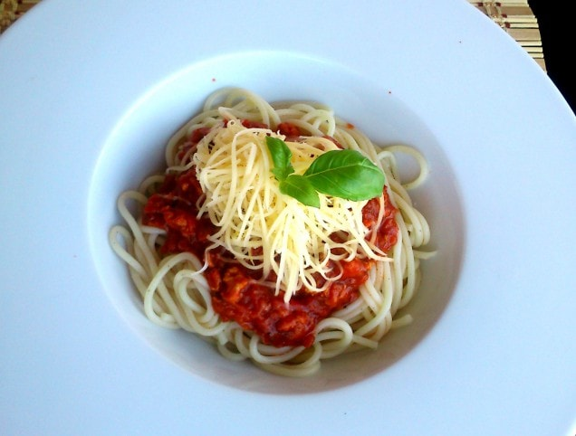

Blognai spagetti

Leírás
Bolognai Spagetti - A klasszikus recept
Hozzávalók
- 1 fej vöröshagyma
- 1db sárgarépa
- 25dkg drált hús
- bors
- oregánó
- 1tk bazsalikom
- 2dl paszírozott paradicsom
- só
- 1db zellerszár levéllel
- 3gerezd fokhagyma
- 2csepp édesítő/2csipet cukor
- 25dkg spagetti
- 15dkg reszelt sajt
Elkészítés
- A hagymát apróra vágjuk, a sárgarépát és a zellerszárat lereszeljük.
-
Az olajon sárgára pirítjuk a hagymát, rátesszük a darált húst,
megszórjuk a sóval, a borssal, a bazsalikommal és az oregánóval. Addig
kevergetjük, míg fehéredni kezd, ekkor felöntjük a paradicsomlével.
-
Hozzáadjuk a répát és a zellerszárat, felöntjük egy kevés vízzel,
hogy a megszokott állagnál hígabb szaftot kapjunk. Fedő alatt, alacsony
lángon kb. 1 órát főzzük.
-
Öt perccel a főzési idő letelte előtt belenyomjuk a fokhagymát, és
hozzáadunk pár csepp édesítőt (vagy egy-két csipet cukrot). Amikor
kész, megkóstoljuk, ha kell, utánaízesítjük.
-
Közben kifőzzük a spagettit, a csomagoláson található utasítás
szerint, és lereszeljük a sajtot.
-
A bolognai spagetti tálaláskor egy adag tésztát a tányérra teszünk,
rákanalazzuk a szószt, és megszórjuk a reszelt sajttal.